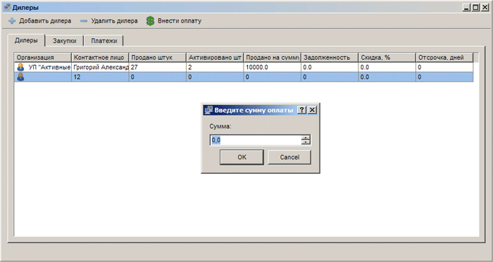
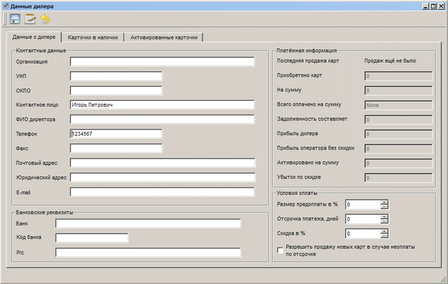
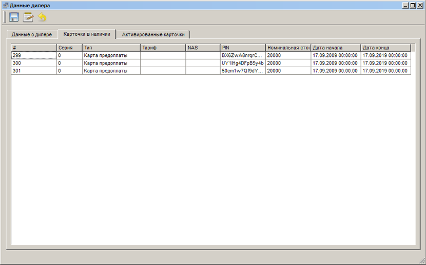

|
Интерфейс и логика |
Top Previous Next |
|
Раздел «Дилеры» открывается
– через меню «Главное меню» → «Дилеры»;
Главное окно раздела составляют основная таблица с тремя вкладками (информация о самих дилерах, закупленных ими партиях карт и взаиморасчетах), а также кнопки «Добавить дилера», «Удалить дилера» и «Внести оплату».

В таблице на главной вкладке для каждого дилера приводятся название и непосредственное контактное лицо, количество проданных и активированных карт, общую сумму продаж, задолженность по платежам, процент скидки и отсрочка.
Обратите внимание: информация на вкладках «Закупки» и «Платежи» будет обновлена только после выбора конкретного дилера на вкладке «Дилеры».
Чтобы зафиксировать факт оплаты дилером счета, выберите дилера в таблице, нажмите кнопку «Внести оплату» и укажите необходимую сумму.
При удалении дилера фактического удаления информации о нем из базы данных не происходит, он лишь перестает отображаться в таблице.
Окно «Данные дилера»
При нажатии кнопки «Добавить дилера» или редактировании существующей информации о дилере (двойной щелчок по названию организации в таблице) открывается окно «Данные дилера», где приведены исчерпывающие данные о дилере и развитии вашего с ним сотрудничества.
Интерфейс составляют две кнопки («Сохранить информацию» и «Вернуть выбранные карточки»), главная закладка «Данные о дилере» и две вспомогательных («Карточки в наличии», «Активированные карточки»). На вспомогательных закладках ведется список количества проданных и активированных карточек, для каждой карточки приводится номер, серия, тариф и сервер доступа (если это карты доступа), PIN-код, номинал, дата начала и конца действия, а также дата активации (на закладке «Активированные карточки»)

В окне главной закладки «Данные о дилере» элементы интерфейса сгруппированы для удобства работы. В текстовых полях группы «Контактные данные» указывается название организации, УНП и ОКПО, контактное лицо по вопросам взаимодействия, ФИО директора, контактные телефон и факс, почтовый адрес, юридический адрес и e-mail.
В полях группы «Банковские реквизиты» указывается обслуживающий дилера банк, его код и расчетный счет организации.
Expert Billing Admin позволяет гибко настраивать условия работы с каждым дилером. Для этого используются поля группы «Условия оплаты». Здесь устанавливается обязательный процент предоплаты, возможная отсрочка платежа, процент скидки и допустимость работы с компанией при возникновении просрочек платежа (флажок «Разрешить продажу новых карт в случае неоплаты по отсрочке»).
Поля группы «Платежная информация» заполняются системой автоматически по мере развития взаимоотношений с дилером. Здесь приводится дата последней продажи карт, суммарное число проданных карт, общую их стоимость, сумму оплаты и сумму продаж активированных карт, прибыль дилера и оператора (без скидки), убыток оператора по скидке и текущую задолженность.
Для создания нового дилера достаточно указать лишь название организации либо контактного лица, заполнение остальных полей опционально. Тем не менее мы рекомендуем заполнить реквизиты полностью.
В профиле дилера можно посмотреть какие карты у него есть в наличии и какие уже были активированы
 Карты в наличии
В случае возврата карт, требуется выделить необходимые поля в таблице и нажать соответствующую на кнопку на панели. This help file was created with an unregistered evaluation copy of Help & Manual. © EC Software. All rights reserved. This message will not appear if you compile this help file with the registered version of Help & Manual. |